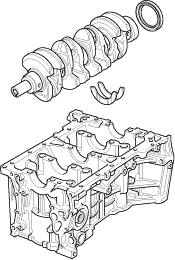
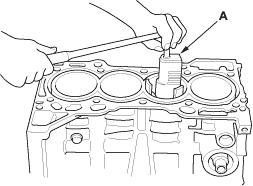
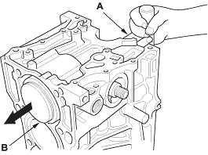

- Remove the rod caps/bearings. Keep all caps/bearings in order.
- Lift the crankshaft out of the engine, being careful not to damage the journals.

- Remove the upper bearing halves from the connecting rods, and set them aside with their respective caps.
- If you can feel a ridge of metal or hard carbon around the top of each cylinder, remove it with a ridge reamer (A). Follow the reamer manufacturer's instructions. If the ridge is not removed, it may damage the pistons as they are pushed out.


- Use the wooden handle of a hammer (A) to drive out the pistons (B).

- Reinstall the lower block and bearings on the engine in the proper order.
- Reinstall the connecting rod bearings and caps after removing each piston/connecting rod assembly.
- To avoid mix-up on reassembly, mark each piston/connecting rod assembly with its cylinder number.
NOTE: The existing number on the connecting rod does not indicate its position in the engine, it indicates the rod bore size.